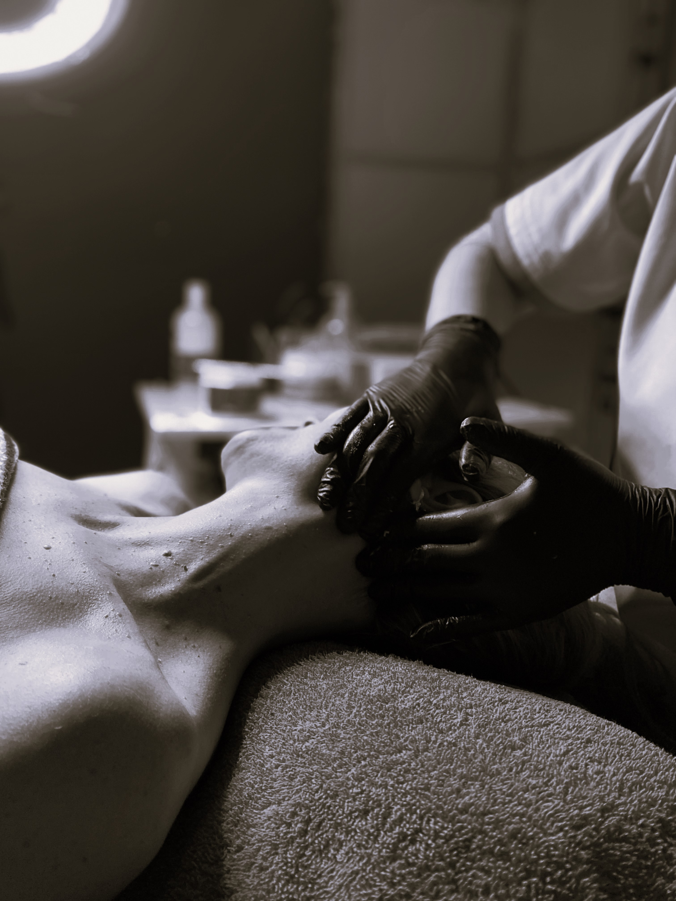
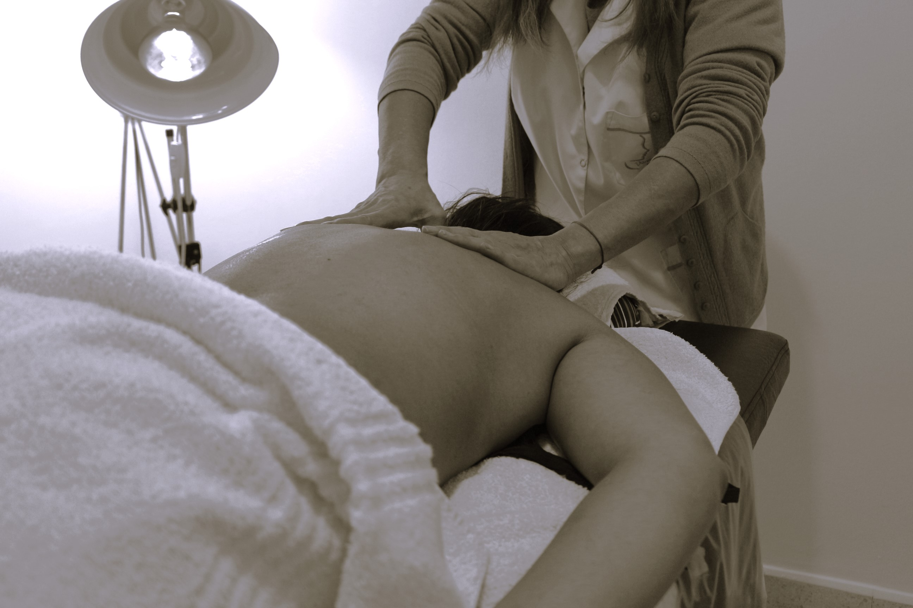
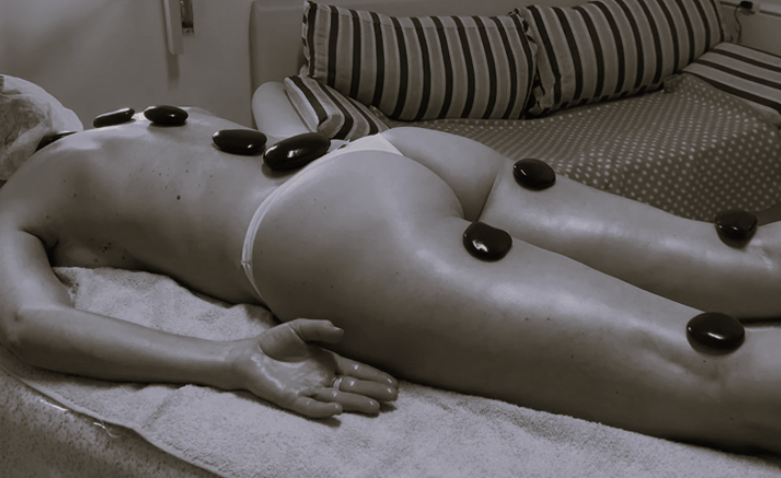
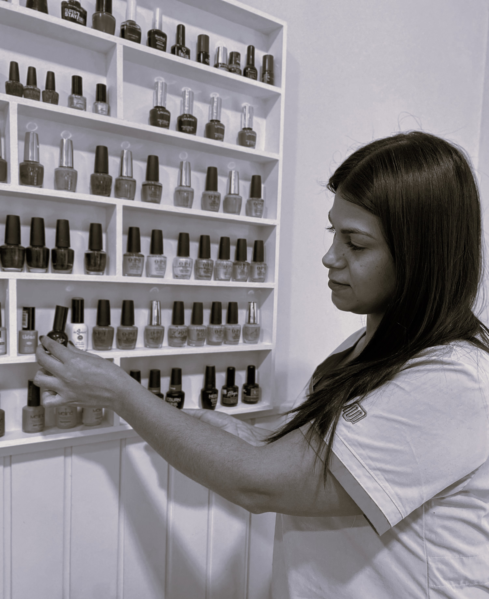
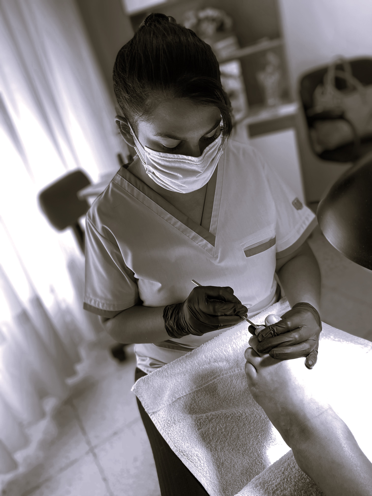

ESTÉTICA FACIAL
Higiene facial
¡Descubrí la belleza natural de tu piel con nuestros tratamientos de higiene facial! En nuestra estética, ofrecemos una variedad de servicios diseñados para limpiar, exfoliar y revitalizar tu piel utilizando productos de alta calidad y técnicas avanzadas para eliminar impurezas, reducir el exceso de grasa y mejorar la textura de tu piel.
Peeling / Radiofrecuencia
En nuestra estética, ofrecemos una combinación perfecta de tratamientos para renovar tu piel desde adentro hacia afuera. Con el peeling, eliminamos las células muertas de la piel, mientras que la radiofrecuencia estimula la producción de colágeno para una piel más firme y tonificada.
Dermapen facial
El Dermapen es un dispositivo de microagujas que estimula la producción de colágeno y elastina en la piel, mejorando su firmeza, textura y luminosidad. Es ideal para reducir arrugas, líneas finas, cicatrices de acné y mejorar la apariencia de poros dilatados.
Hilos tensores
Los hilos tensores son una técnica innovadora que ha revolucionado el mundo de la estética facial. Consisten en hilos delgados de material biocompatible que se insertan debajo de la piel para levantar, reafirmar y rejuvenecer el rostro de manera no invasiva estimulando la producción de colágeno. Esta técnica se ha convertido en una alternativa popular a la cirugía estética tradicional. Con nuestra experiencia y tecnología avanzada, te garantizamos resultados excepcionales que te harán lucir y sentirte rejuvenecida.
DEPILACIÓN
Depilación descartable
¡Conseguí una piel suave y libre de vello al instante con nuestra depilación descartable! Nuestros expertos utilizan productos de alta calidad para ofrecerte resultados profesionales. Con nuestra depilación descartable, podrás disfrutar de una piel suave y sedosa en minutos. Además, todos nuestros productos son de un solo uso, garantizando la máxima higiene y seguridad en cada sesión. Olvídate de las preocupaciones y disfrutá de una experiencia de depilación sin complicaciones.
- Pierna entera
- 1/2 Pierna arriba
- 1/2 Pierna abajo
- Cavado
- Cavado + tira
- Axilas
- Rostro completo
- Esculpido de cejas
- Bozo/mentón/cejas
- Brazos
- Espalda
- Abdomen
- Pecho
- Pecho + abdomen
- Glúteos
- Hombros
- Zona bóxer
Depilación láser
¿Cansada de lidiar con la depilación constante? Nuestro tratamiento láser es la solución definitiva que estás buscando. Con resultados duraderos y sin dolor, podrás disfrutar de una piel suave y sin vello en todas las áreas del cuerpo. Nuestros especialistas altamente capacitados utilizan tecnología láser de última generación para proporcionarte un tratamiento seguro, preciso y cómodo. Además, ofrecemos planes de tratamiento personalizados para adaptarnos a tus necesidades específicas y objetivos de depilación.
- Pierna entera
- 1/2 Pierna arriba
- 1/2 Pierna abajo
- Cavado
- Cavado + tira
- Axilas
- Rostro completo
- Esculpido de cejas
- Bozo/mentón/cejas
- Brazos
- Espalda
- Abdomen
- Pecho
- Pecho + abdomen
- Glúteos
- Hombros
- Zona bóxer
ESTÉTICA CORPORAL
Masajes modeladores
Drenaje linfático manual
Este tratamiento suave y relajante estimula el sistema linfático para eliminar el exceso de líquidos y toxinas, reducir la retención de líquidos y mejorar la circulación sanguínea. Como resultado, notarás una reducción en la hinchazón, una piel más firme y un contorno corporal más definido.
HIFU
La tecnología HIFU (Ultrasonido Focalizado de Alta Intensidad) es una técnica no invasiva que estimula la producción de colágeno y tensa la piel de forma natural. A través de ondas ultrasónicas de alta energía, HIFU penetra profundamente en las capas de la piel, generando calor para estimular la renovación celular y mejorar la firmeza y elasticidad de la piel.
MASOTERAPIA
Masajes descontracturantes
¿Sentís molestias musculares que te impiden disfrutar plenamente de tu día a día? Con un enfoque preciso en las áreas más afectadas, nuestros masajistas trabajarán para liberar los puntos de tensión y restaurar la flexibilidad natural de tu cuerpo, brindándote una sensación de alivio y confort inmediato.
Masajes relajantes
¿Necesitas un momento para desconectar y recargar energías? Nuestros especialistas en masajes utilizan técnicas suaves y terapéuticas para liberar la tensión muscular, mejorar la circulación y promover un profundo estado de relajación. Con movimientos fluidos y precisos, te sumergirás en un mundo de tranquilidad y bienestar.
Reflexología
Reiki
El Reiki es una técnica de sanación japonesa que canaliza la energía universal para restaurar el equilibrio físico, mental, emocional y espiritual. Nuestros practicantes de Reiki aplican técnicas suaves de imposición de manos para liberar bloqueos energéticos y promover la relajación profunda, permitiendo que la energía fluya libremente por todo tu ser.
Piedras calientes
Las piedras calientes se utilizan en combinación con técnicas de masaje para aliviar el estrés, relajar los músculos y mejorar la circulación sanguínea. El calor de las piedras ayuda a desbloquear los puntos de tensión, promoviendo una sensación de calma y bienestar profundo.
MANOS Y PIES
Manicuría + esmaltado
Nuestros especialistas te ofrecen un tratamiento completo para que tus manos luzcan perfectas en todo momento. Con una amplia gama de colores y marcas de esmaltes, te garantizamos resultados impecables y duraderos que resaltarán tu belleza natural.
Esmaltado semipermanente
Nuestro esmaltado semipermanente se destaca por su practicidad, durabilidad y comodidad. Con él, tus uñas lucirán perfectas durante semanas, gracias a nuestros productos de alta calidad y técnicas profesionales que garantizan resultados duraderos y de alta calidad. Disfrutá de la tranquilidad de saber que tus uñas estarán impecables en cualquier ocasión, sin necesidad de preocuparte por el mantenimiento constante.
Belleza de pies
Con nuestra pedicura profesional, disfrutarás de un recorte y limado de uñas, cuidado de cutículas y eliminación de durezas y callosidades para que tus pies luzcan perfectos. Además, utilizamos productos exfoliantes y nutritivos para suavizar e hidratar la piel, dejando tus pies renovados.
Kapping
El kapping es una técnica que consiste en aplicar una capa protectora sobre tus uñas naturales para fortalecerlas y protegerlas de roturas y daños. Utilizamos productos de alta calidad que ofrecen una duración excepcional y un acabado impecable.
EMBELLECIMIENTO DE PESTAÑAS Y CEJAS
Permanente de pestañas + tintura
La permanente de pestañas proporciona una curvatura natural y duradera, resaltando la belleza de tus ojos y haciéndolos lucir más grandes y expresivos. Mientras tanto, la tintura añade color y definición, realzando cada pestaña y proporcionando un efecto de máscara de pestañas sin necesidad de maquillaje diario.
Laminado de cejas
El laminado de cejas es una técnica que permite moldear y fijar las cejas, creando un efecto de cejas peinadas y perfectamente alineadas. Con este tratamiento, lograrás unas cejas más voluminosas, uniformes y con un aspecto natural.
Lifting de pestañas
Nuestra técnica profesional eleva tus pestañas desde la raíz, proporcionando un efecto de longitud y curvatura que abre tus ojos y realza tu belleza natural. Olvídate del maquillaje diario y disfruta de una mirada radiante y natural.